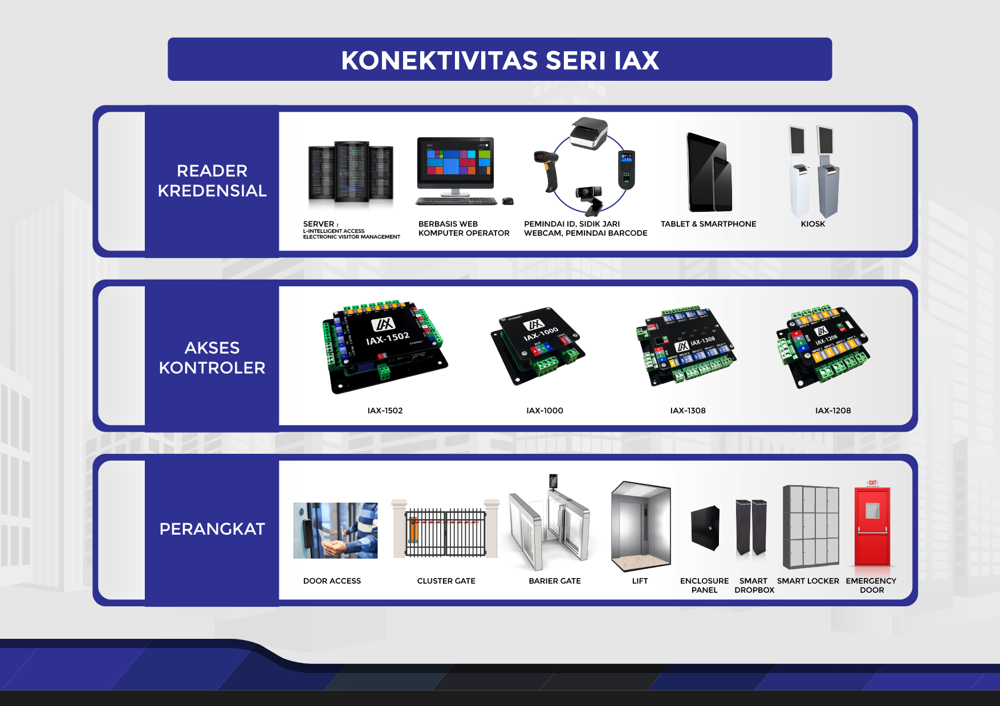
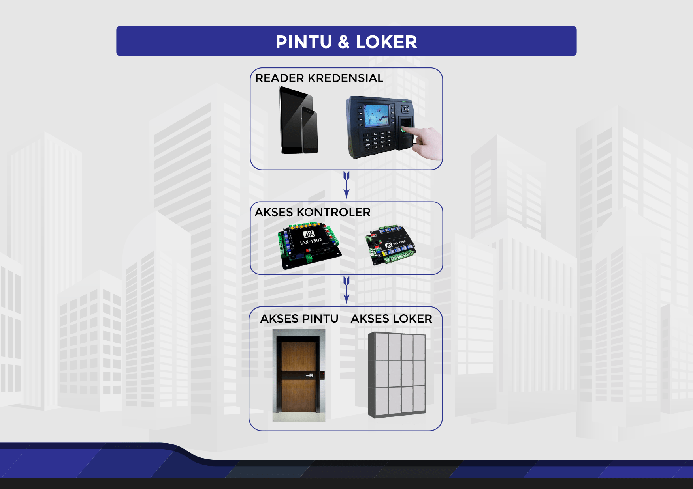
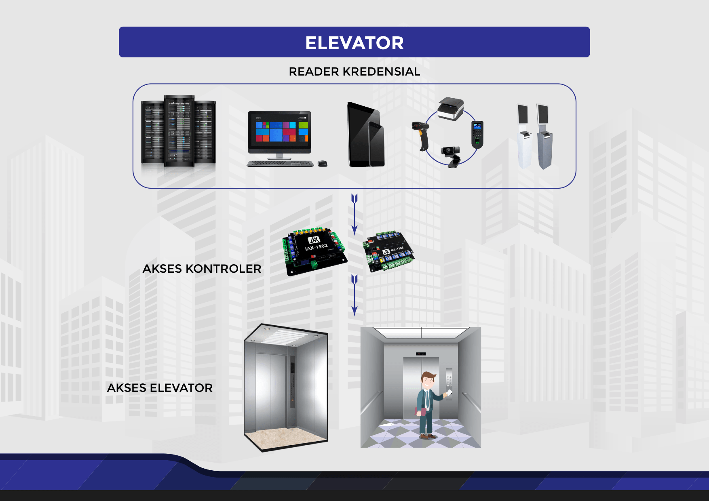
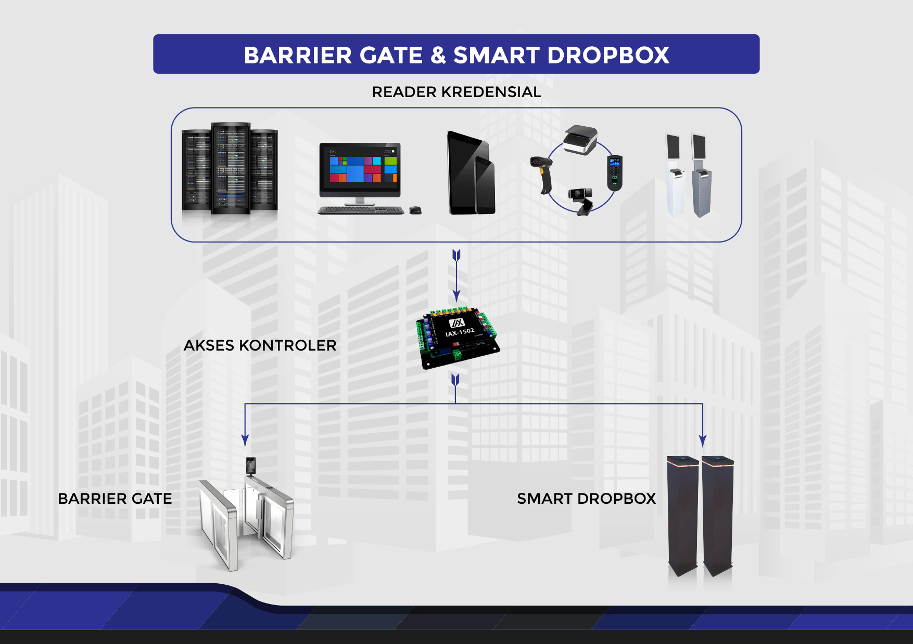
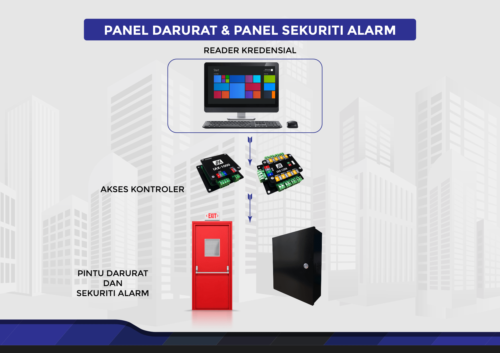

IAX Series
The IAX Series brings the IAX-1502 as a network-based controller that controls one to two readers. IAX-1502 has Small dimensions so it is easy to install. Not only compact size, IAX-1502 has high performance and Capable of storing up to 1,000,000 credentials in standalone mode or not connected to the network. IAX-1502 also has high flexibility and can support technological readers such as RFID, magnetic stripe, biometrics (fingerprint, face and iris eyes), PIN code, QR code and also a reader with Bluetooth technology and NFC. This IAX-1502 controller is also equipped with an interface IA-BUS for adding input contacts and output relays if needed.
Network Controller for Two Reader Access
The IAX-1502 is a network-based controller that can control two reader access. This controller has a small and compact size so it can installed easily. IAX-1502 is suitable to control two doors with single reader configuration or can also be used to control one door with dual reader configuration.
This controller offers great flexibility and can support readers with RFID and magnetic technology stripe, biometrics (fingerprint, face and iris), PIN codes, QR codes and also technology readers Bluetooth and NFC.

Main Controller Network for Contacts & Relays
IAX-1000 is a master controller having IA-BUS interface and can be used to control 8 IAX-1208 controller or 8 controllers IAX-1308. Number of IAX-1000s that can be controlled by a software application is not limited. This makes the IAX-1000 system capable to be used from small systems, for example, monitoring multiple input contacts to large systems, and monitoring thousands of input contacts while controlling thousands of dry contact relays.

Child Controller for Input Contacts
IAX-1208 is a child controller that has 8 pieces insert dry contacts. Dry contacts in general is used as output from the sensor. For example sensor to detect the condition of a door is closed or open. This controller has an IA-BUS interface that can be connected to master controller such as the IAX-1000 or IAX-1502. The IA-BUS interface can support up to 8 units of child controller.

Child Controller For Output Relay
IAX-1308 is a child controller that has 8 pieces of dry contact relay. Dry contact relays in general is used as a switch to Turn on or Turn off electronic devices by connecting them or cut off the power supply. Dry contact relay can be used to stream or cut off the electricity to the electronic lock so we can lock or open a door using an electronic key.
This controller has an IA-BUS interface that can be connected to a master controller such as IAX-1000 or IAX-1502. An IA-BUS interface can be supports up to 8 child controllers.

For more information, please download the PDF below
IAX Product Implementation
IAX products can be implemented on devices that requires security access such as access doors, speed gates, conventional elevators, CDS elevators, emergency doors, lockers, security panels alarm, and cluster gate.
Door and Locker Access Controller
IAX products can be applied to doors or interior lockers office/school/hospital/apartment building based on fingerprint, face, card biometric credentials access, PIN or QR code or you can also use access software from a tablet or smartphone.
Elevator Access Controller
IAX products can be applied to office building elevators or apartments, IAX can support conventional elevators which uses button access in elevators or elevators CDS which uses key access from the floor lobby. IAX series can be connected to the reception system in the lobby office or apartment building to create a more efficient security system.
Barrier Gate Access Controller and Smart Drop Box
IAX products can be applied to speed gate systems and drop box in an office building connected to the system guest reception which can be in the form of a kiosk or computer operator or website and smartphone application.
Emergency Door Controller
IAX products can also be used as input receivers status / signal from the emergency door or security panel alarm which will later be sent as a report/log to the relevant security system.
